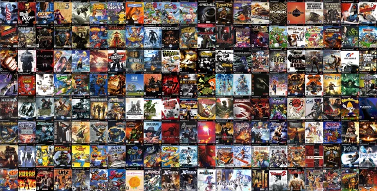
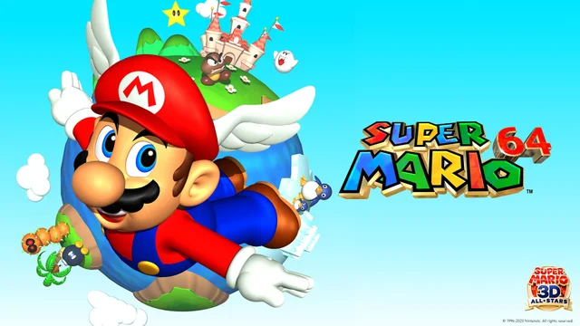
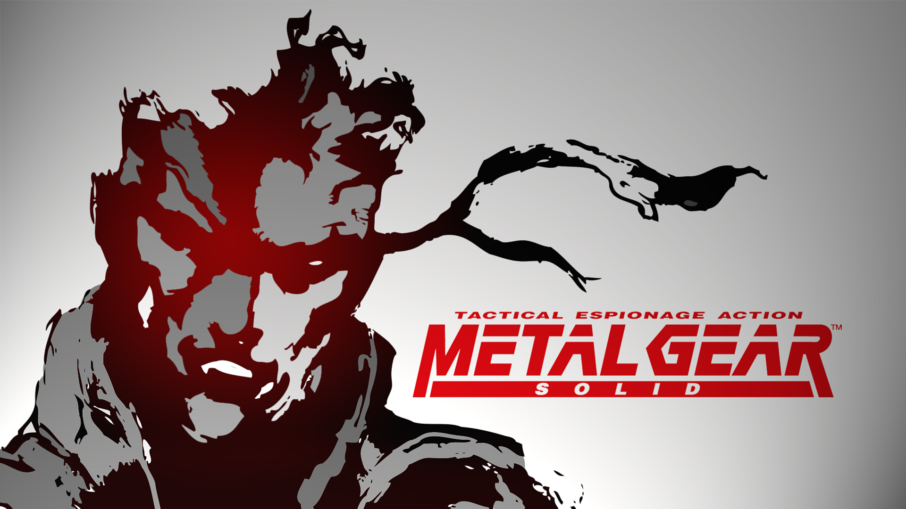

TOP 10 BEST GAMES OF ALL TIME
At the heart of every great game lies a unique blend of innovation, storytelling, and immersive experiences. Our curated list of the top 10 best games of all time celebrates titles that have not only captivated players but also reshaped the gaming landscape. These games represent the pinnacle of what interactive entertainment can achieve, each bringing something extraordinary to the table.

Description of what these games are:
Our selection features a diverse range of genres and styles, from epic open-world adventures to classic puzzle challenges. These games have set new standards in their respective genres, combining groundbreaking mechanics, compelling narratives, and unforgettable experiences. Whether you’re exploring vast fantasy worlds, solving intricate puzzles, or engaging in intense combat, these games offer something for everyone.
Impact And Significance
- Innovation: Each game on our list has introduced groundbreaking features or mechanics that have influenced countless others. From the revolutionary 3D platforming of Super Mario 64 to the open-world freedom of Breath of the Wild, these games have pushed the boundaries of what is possible in gaming.
- Immersive Storytelling: These titles excel in storytelling, creating rich, engaging narratives that resonate with players long after the credits roll. Games like The Witcher 3 and Chrono Trigger are celebrated for their deep lore, memorable characters, and emotional impact.
- Cultural Impact: Many of these games have left a lasting imprint on popular culture and the gaming community. Tetris, for instance, has become a global phenomenon, while Grand Theft Auto V has redefined open-world gameplay and online multiplayer.
- Timeless Appeal: What makes these games stand out is their timeless quality. They continue to be celebrated by both new players and long-time fans, proving that great design and creativity never go out of style.
Why they're the best?
These top 10 games represent the zenith of game design and creativity. They have been selected not just for their technical achievements, but also for their ability to connect with players on a personal level. They offer immersive worlds, innovative gameplay, and stories that leave a lasting impression. In short, they embody the very best that the world of gaming has to offer.
Explore our list:
Dive into our detailed exploration of these iconic games. Discover what makes them exceptional, why they’ve earned their place in the gaming hall of fame, and how they’ve influenced the world of interactive entertainment.
LIST OF GAMES:
- The Legend of Zelda: Breath of the Wild
The Legend of Zelda: Breath of the Wild

- The Elder Scrolls V: Skyrim
The Elder Scrolls V: Skyrim

- The Witcher 3: Wild Hunt
The Witcher 3: Wild Hunt

- Super Mario 64
Super Mario 64

- Half-Life 2
Half-Life 2

- Dark Souls
Dark Soouls

- Tetris
Tetris

- Grand Theft Auto V
Grand Theft Auto V

- Chrono Trigger
Chrono Trigger

- Metal Gear Solid
Metal Gear

Go to The Legend Of Zelda